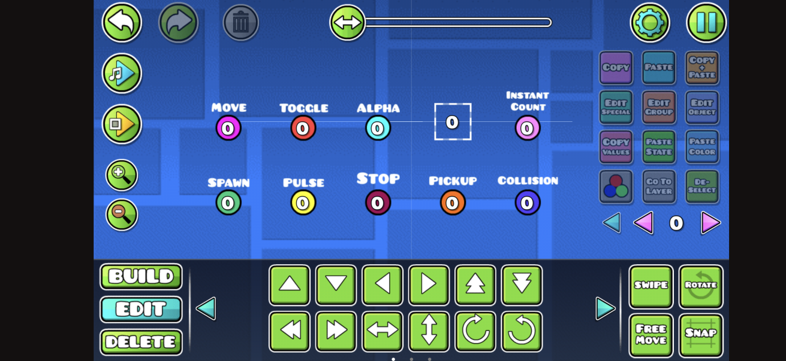

I am currently a student at Rice University (c/o 2026) double majoring in Computer Science and Film.
My fields of interest include Computer-Generated Imagery Software Development, Animation Software Development, Machine Learning and AI, Game Development, and Graphic Design.
I am a passionate, highly-motivated, communicative, and analytical student willing to work on ambitious projects.
October 2022 - August 2023
BitWorld Odyssey is a 2-hour long open-world, ray-caster survival game
designed entirely within the limitations of Geometry Dash.
In this game, I managed to create:
- An optimized ray-caster engine
- A save system that saves up to 7 bits of information for each resource
- Crafting, mining, trading, and first-person shooter mechanics
- 8 different environments with different blocks and textures
- Numerous NPCs, bosses and collectibles
I did all of this without the use of
any external programs. This was all done in
a game that doesn't support
Object Oriented Programming, abstraction, or even a way to
do simple math operators such as setting variables, multiplying, and dividing.
So how is this game even possible?
I took advantage of a Geometry Dash game mechanic called "triggers".
Triggers allow you to do many different things such as moving objects, changing their color, rotating objects, and other
operations.
The image below showcases some of the triggers that can be found in Geometry Dash's level editor:

While triggers are usually used to make standard Geometry Dash levels, you can actually use them in a very similar way to
how you would use a programming language. The only difference is that there are LOTS of limitations.
As stated above, you can't do Object Oriented Programming, abstraction and triggers can only
add or subtract values. If you want to use more complicated functions, you need to build everything from the ground up.
So that's what I exactly did.
Here is what some of the code looks like in BitWorld Odyssey:
Geometry Dash's level editor was never intended to support game development. This meant I had to face many different
problems, such as lag, code efficiency, and countless editor bugs. But after 10 months of development, I managed to implement
all of these features into an immersive, unparalleled experience.
As of October 2023, BitWorld Odyssey has achieved 40,000 downloads as well as the highest level
of approval from the developer of Geometry Dash himself, RobTop Games.
May 2021 - March 2022
During my senior year, I directed independent solar flare research with professor
Dr. Gray from the University of Alabama.
Our lives are highly dependent on satellite technology.
- GPS (Global Positioning Systems)
- Astronomical Observations
- Television, Radio, the Internet, etc.
All of these things would be impossible without satellites.
This is why solar flares are so dangerous.
Solar flares are a phenomenon where the sun bursts out
electromagnetic particles, particularly UV radiation and X-rays.
The sun ejects these flares in an inconsistent pattern.
If these flares collide with our satellites, they would cause massive damage
to our infrastructure, resulting in widescale blackouts across the globe.
This project aimed to utilize machine learning to predict severe solar flare occurences.
Data was taken from the National Oceanic and Atmospheric Administration (NOAA) through
the observations of Geostationary Operational Environmental Satellites (GOES).
Keras was used to perform machine learning on the datasets.
While I was not able to create a working model because of the erratic nature of the data sets,
I was able to find interesting patterns within the data. The solar flare data sets followed a
known 11-year solar cycle, but I was also able to find a second, much longer solar cycle that hosted
the smaller 11-year solar cycles.
October 2019 - Present
During my free time, I like to independently produce animated films. I use various software
such as Adobe Products, Blender and Flipaclip. I also make the music and sound effects with
FL Studio 20. To me, animation is a vessel for unrestricted imagination, and a pure artform.
Finished Projects:
-
Kiki - July 2021
"Kiki the Chicken goes exploring. What could possibly go wrong?"
With this short, I wanted to push my animation skills by exploring many techniques that I had not used before, such as parallax
backgrounds, stop motion, and playing with perspective. This was definitely an animation experiment first, and a story second,
but I am proud of what I was able to accomplish here.
-
BitWorld Hell Trailer Animations - August 2022
To complement the release of one of my games "BitWorld Hell" (not to be confused with BitWorld Odyssey), I decided to use
computer animation to make cutscenes for the game's trailer. Challenges included getting used to character rigging, texturing,
and modelling.
-
Electrolyte Love - May 2021
"A love story about two compounds, HCl and NaOH."
I produced this animated short film for my AP chemistry class within a two-week timeframe. I wanted to make a short akin to something
you would see in a Pixar film, where inanimate objects would come to life. Originally, I had a much longer script and storyboard planned,
but due to time constraints, I vastly condensed this short to keep the best ideas in.
-
ASMS Toons Episode 1: Procrastination - January 2020
"An ASMS Student attempts to study, but something happens along the way..."
This was one of my first animated short films, and my first serious foray into 2D animation. The premise of this film is based
on my experiences at my high school, the Alabama School of Math and Science.
I presented this short film to an audience of over 300 people where I received glowing praise.
-
DragonTalks Visuals - March 2021
This was an animated montage for my high school's research symposium. I got the topics from each presenter and
made a short animated segment based on them.
Upcoming Projects:
- Animated Short Film about Plants - 2023
- "PDC" - Early 2024
- The Flowers Bloom - TBA